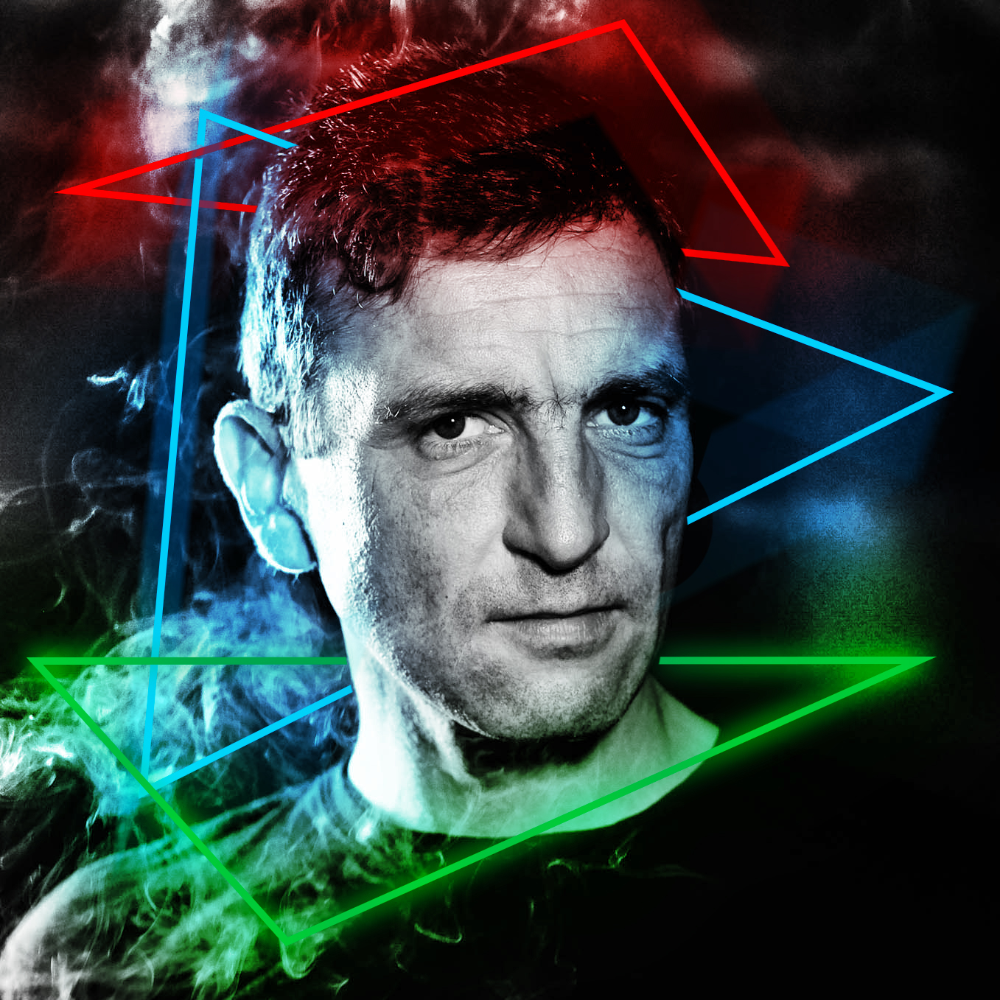

Ma conversion en tant que testeur de logiciel est la continuité de mon expérience. Autodidacte et motivé, formé par IT Akademy Lyon à orchestrer au mieux le travail de correction et de gestion des anomalies des logiciels. 20 ans d'expérience dans l'évènementiel comme régisseur lumière et photographe. Adaptable et flexible, j'ai l'esprit d'équipe et la capacité à bien composer avec les obstacles et à rester fidèle aux objectifs